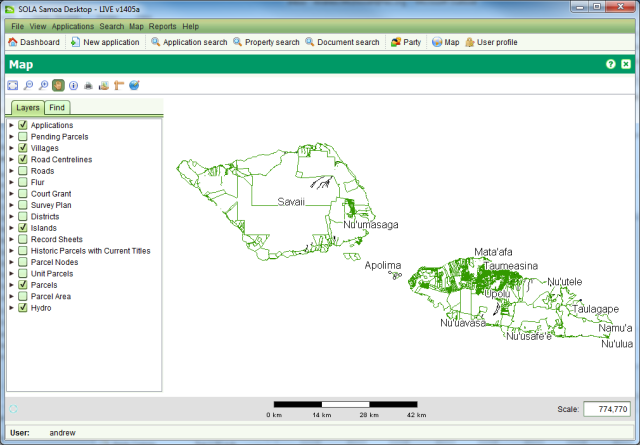

The SOLA Map Viewer allows you to navigate and interact with the
geospatial data managed by SOLA. It can be accessed from the Map >
Ctrl + Open Map menu or selecting 

The SOLA Map Viewer includes a toolbar for navigating and querying the map and a Table of Contents that can be used to control the layers displayed on the map. The tools provided for the SOLA Map Viewer are:
The SOLA Map Viewer can also support additional map tools for editing and related spatial tasks (e.g. Locate Application). These tools are described in the relevant How To sections
The Table of Contents control identifies the layers that are displayed in the map. You can show or hide these layers by checking or clearing the checkbox for the layer.
The Information Tool can be used to query geospatial features such as parcels, survey control and place names. As geospatial features are often in close proximity or overlap, the Information Tool displays details for all features immediately surrounding the selected location.
Also see